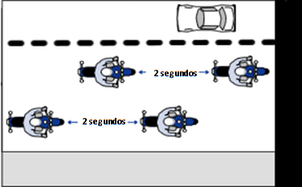
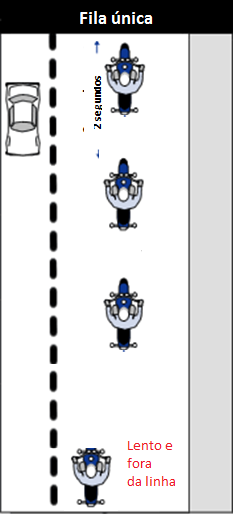

ORIENTAÇÕES
O proposito dessas orientações é passar para você PILOTO que a segurança está em primeiro lugar.
Muitas situações podem comprometer a segurança dos motociclistas e devem ser evitadas:
– Conversar com o piloto ao lado
– Se aproximar demais lateralmente dos demais pilotos, principalmente em velocidades superiores a 40 km/h
– Sair para o acostamento sem sinalizar
– Cruzar pistas que rodam no mesmo sentido para fazer uma conversão
– Cruzar pistas em sentido contrário sem aguardar no acostamento
– Acelerar ou desacelerar bruscamente sem sinalizar
Bom, essas são situações que costumam gerar confusão, mas é importante sempre estar atento aos movimentos do líder e do grupo.
REGRAS BÁSICAS PARA COMBOIOS DE MOTOS
ANTES DO PASSEIO
– Verificar se documentos dos pilotos e das máquinas está em dia. Nunca saia em comboio com a documentação atrasada.
– Verificar óleo, todas as luzes, relação da moto, lubrificação das correntes, buzina, aspecto geral de cabos de embreagem, acelerador e freios
– Verifique os freios: pastilhas, lonas, nível do fluido, e o estado dos pneus
– Suspensão e bateria também devem ser checados
NO DIA DO PASSEIO
– Estar no ponto de encontro, no horário marcado para a concentração com motos abastecidas e pneus calibrados
– É sempre bom levar capa de chuva ou roupas impermeáveis
– Prestar atenção ao briefing que será feito pelo líder do comboio
FORMAÇÃO
Sempre manter distância de 2 segundos do membro à sua frente; manter a distância de 1 segundo do membro que está na sua diagonal.
Dica: para calcular essa distância, visualize um ponto à frente na pista. Na passagem da moto à sua frente, conte MIL E UM, MIL E DOIS. Esse é o tempo de 2 segundos
A melhor posição para rodar nas estradas é a formação cruzada.
É a formação que favorece a segurança de todos os integrantes uma vez que cada moto terá espaço ao seu redor para alguma manobra de emergência.
É importante que todas as motocicletas do comboio ocupem a mesma faixa para permitir a livre circulação dos outros veículos.
Observe o desenho abaixo:

Mas algumas vezes, seguindo o critério do líder, a formação poderá ser alterada para uma fila única. Normalmente essa formação é utilizado quando rodamos por estradas mais sinuosas.

Ao adentrar cidades, andando em velocidades bem baixas, nós podemos também assumir a formação lado a lado, pois permite uma melhor compactação do grupo.
PRESTE ATENÇÃO:
– Não sair da formação
– Não ficar ziguezagueando
– Não ultrapassar a moto que vem à frente
– Não andar lado a lado quando em velocidades superiores a 40 km/h (a menos que seja uma orientação do líder)
– Não conversar com os companheiros
– Não acelerar nem reduzir bruscamente
– Utilizar sempre a mesma faixa de rodagem do grupo
– Não ultrapassar o líder nem fique para trás do ferrolho
– Mantenha distância constante
ORGANIZAÇÃO DO COMBOIO
Os grupos com mais de 6 ou 8 motos em geral necessitam ser organizados. Essa organização começa com a escolha do líder e do ferrolho, ambos devem ser motociclistas experientes.
Líder: deve ser o motociclista que conhece bem os sinais para viagens de moto, e precisa conhecer bem o percurso. Ele fica atento ao deslocamento do grupo e controla a velocidade para que o grupo rode coeso
Ferrolho: normalmente um motociclista mais experiente e que possua uma máquina possante, que permita uma rápida ultrapassagem para chegar ao líder, caso alguma das motos precise parar na estrada.
Muito bom quando líder e ferrolho possuem intercomunicadores, que facilitam a comunicação entre eles.
Em comboios maiores que 15 ou 16 motos, convêm também nomear um anjo, um motociclista que vai circular em geral ao lado do grupo, garantindo a coesão e impedindo que outros veículos entrem no meio da formação. O anjo deverá também ficar atento a todos os membros, avisando o líder sempre que alguém precisar parar.
Em comboios maiores, com mais de 25 motos, convém repartir o grupo em vários grupos menores de 10 ou 12 motos. Esses grupos vão rodar juntos, na mesma formação. O grande problema em grupos grandes é dar acesso aos outros veículos às saídas e entradas das estradas. Nesses casos, o grupo pode se abrir para permitir a passagem de outros veículos se aproximando novamente assim que possível. Normalmente essa organização é feita pelos meios, membros também com experiência nas estradas, que auxiliam na formação do grupo.
GESTOS PARA VIAGENS DE MOTO EM GRUPO
Para facilitar a comunicação entre os motociclistas, existem alguns gestos que são conhecidos universalmente. Colocamos abaixo os mais comuns e que todos devem conhecer.
O líder fará os gestos para a organização do grupo. Por estar em primeiro lugar, normalmente as situações serão sinalizidas primeiro pelo líder; esses gestos deverão ser reproduzidos pelos demais membros do grupo para que os pilotos que vêm mais para trás também tenham conhecimento do que se seguirá…
Mas, caso alguém precise parar ou aviste um buraco na pista, ele deve sinalizar para os membros que o seguem.

O quadro acima é um resumo dos sinais…